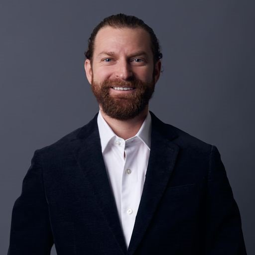

Lobel Accountancy Corporation · CPA
Audit, review, compilation, and financial reporting services for privately held companies that demand institutional-quality work — without the institutional overhead.
The financial rigor of a large firm. The attention of a dedicated partner.
Lobel Accountancy Corporation serves privately held companies, specialty lenders, and growing businesses that need audit-quality financial work and decision-ready reporting — without being handed off to junior staff.
From month-end close ownership and financial statement preparation to full-scope audits and fractional CFO support, every engagement is led by a senior CPA and CFE with deep experience across complex entity structures, technical accounting standards, and the systems behind the numbers.
What We Do
From compilations and reviews to full audits and fractional CFO work — structured around your needs, not standard packages.
- Financial statement audits (GAAS)
- Reviews — ideal for growing businesses and lender requirements
- Compilations — cost-effective for internal or third-party use
- Multi-entity and consolidated engagements
- Full footnote disclosure drafting
- Multi-entity consolidations
- CECL, ASC 842, ASC 860 reporting
- Restatement and revision support
- Month-end and year-end close
- Board and investor reporting
- Team hiring and mentorship
- ERP implementation oversight
- Attorney-referred and direct engagements
- Asset misappropriation and financial statement fraud
- Investigative reports suitable for legal proceedings
- Expert witness and litigation support
- Engaged by audit firms as a qualified specialist
- Pre-count planning and instructions review
- Physical observation and test counts
- Workpaper documentation for audit file
- PBC package preparation and technical memos
- Control documentation, design, and testing
- Accounting policy development
- Risk assessment and compliance frameworks
Deep expertise where it matters most
LAC brings specialized knowledge across financial services, manufacturing, and technology — and serves privately held companies of all kinds where the accounting complexity demands senior-level attention.
A straightforward engagement process

Senior-led. Every engagement, every time.
Jeffrey Lobel is a Certified Public Accountant and Certified Fraud Examiner with over 12 years of experience spanning public accounting, audit, and controller-level financial reporting for complex private enterprises. He founded Lobel Accountancy Corporation to deliver institutional-quality financial work with the direct access and responsiveness that larger firms rarely provide.
Jeffrey began his career in public accounting at Baker Tilly, one of the nation's leading advisory and assurance firms, where he served clients across California on a wide range of engagements — from large public company audits with SOX internal control work and an IPO to mid-market audits, reviews, and compilations for privately held businesses of all sizes. That foundation gave him a command of audit methodology, technical accounting standards, and the full spectrum of assurance services that most controllers never develop.
He later transitioned to industry as Controller at a California-based specialty finance company, overseeing financial reporting across portfolios totaling more than $600 million in managed receivables. In that role, he led multi-entity consolidated audits with national firms, built automated accounting infrastructure, and managed all aspects of external financial reporting — from CECL and ASC 860 securitization accounting to debt covenant compliance and board-level presentation.
Jeffrey holds a degree from the University of Oregon's Charles H. Lundquist College of Business and is actively licensed as a CPA in California. His work spans the full range of assurance and accounting engagements — audits, reviews, compilations, financial statement preparation, GAAP technical research, and the systems and teams that support business growth.
At LAC, Jeffrey works directly on every client engagement. There are no handoffs to junior staff — the senior expertise you engage is the expertise you receive.
Senior expertise. Every engagement, every time.
Most firms assign their best people to their biggest clients. At Lobel Accountancy Corporation, every client gets the same senior-level attention — because every engagement is led by the same principal CPA.
Certified Fraud Examiner (CFE)
California Accountancy Corporation
Serving clients statewide and nationally
Engagements & outcomes
Built on the belief that serious financial work deserves serious attention.
A California licensed CPA firm serving privately held companies with audit, assurance, and financial advisory services.
Frequently asked questions
Areas Served
Lobel Accountancy Corporation is based in Newport Beach, California and serves clients across Orange County, the greater Los Angeles area, and statewide — as well as nationally for services that don't require in-state licensure.
- Newport Beach
- Irvine
- Anaheim
- Santa Ana
- Costa Mesa
- Huntington Beach
- Fullerton
- All of Orange County
- Los Angeles
- Long Beach
- Pasadena
- Torrance
- Riverside & San Bernardino
- San Diego
- Greater Southern California
- San Francisco Bay Area
- Sacramento
- San Jose
- Central Valley
- All of California
Let’s talk about what you need
Whether you have a specific engagement in mind or just want to explore whether we’re a fit, we’re happy to have a straightforward conversation — no sales pitch, no obligation.
Book a Free ConsultationWe typically respond within one business day.